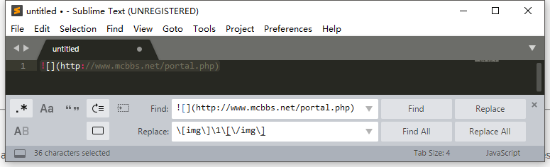
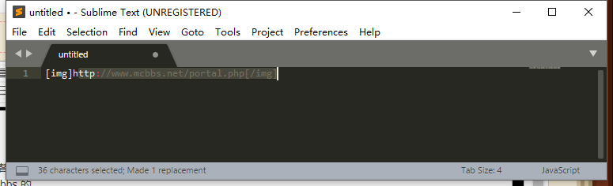

由于时常能看到一些关于 ItemStack 里面提取 lore 的属性信息的，并且正好最近写了个属性插件，那就来讲一讲正则吧。
Ⅰ 普通的字符串概念
一些关于字符串的术语
以下术语会用于这篇教程中：
Σ：字母表集合，在这篇教程中为能打在这个帖子中的任何字符，除了ε，因为要用它表示空串字符串：来自Σ的0或N个字符的有限序列，也称串在这篇教程中，字符串会用
这种格式包围空串：含有0个字符的字符串，也会用ε表示子串：字符串掐头去尾（0或N个字符）得到的新字符串abcbabc的子串有abcbabcabcbbabcbaε
也就是说在 Java 里，某串A的子串B 可以让A.contains(B) = true子序列：字符串随机取出字符（0或N个）得到的新字符串abcbabc的子序列有abcbabcababcaε真子串：除了自身以外的子串真子序列：除了自身以外的子序列
一些关于语言的术语
同上，而且这些术语会用的很多：
字符串的连接：两个串的连接为第一个串后紧跟着第二个串的串假设 A 是字符串
hailuo，B 是字符串is，C 是字符串handsome，那么 A B C 的连接表示为ABC，也就是hailuo is handsome字符串的或：两个串的或为 为第一个串或第二个串的串假设同上，A C 的或表示为
A|C，也就是hailuo字符串 或者handsome字符串字符串的Kleene闭包：为0或N个某个串的连接假设 A 为字符串
ab，A*为一个启发式寻路算法为 εabababababababab….(字符串)：和字符串是一样的
字符串操作的优先级
在描述一个字符串时，你可能已经遇到了这类似的问题：
aac|dbb是指 {aac,dbb} 还是 {aacbb,aadbb} 呢abcd*是指 {ε,abcd,abcdabcd, ….} 还是 {abc,abcd,abcdddd, …} 呢
为了解决这些问题，我们可以加括号：
(aac)|(dbb)指 {aac,dbb}，而aa(c|d)bb指 {aacbb,aadbb}(abcd)*指 {ε,abcd,abcdabcd, ….}，而abc((d)*)指 {abc,abcd,abcdddd, …}
但是，大量使用括号显然不美观，所以定义以下操作的优先级：
(a) > a* > ab > a|b
也就是说，最上面的两个问题的答案分别为 {aac,dbb} 和 {abc, abcd, abcdddd, …}
理解以上内容后，你就有足够的基础理解正则表达式了。
为了防止你的理解不够深刻，你可以思考一下以下几个问题：
- 列出
abcd的子串、真子串、子序列、真子序列 (a|b)*描述的是什么串a((a|(b*))((b)b|(cc)*)|dd)可以去掉哪些括号并不影响其表达的字符串
答案见文末
Ⅱ 普通正则表达式
正则表达式，可用于匹配给出的字符串是否满足要求，也可以用于从字符串中提取需要的信息。
初代的正则表达式只有4种语法：
- 连接
ab - 或
a|b - 0个或多个
a* (a)等于a
和上一章介绍的优先级是相同的。
本章从一个例子开始：
匹配浮点数（floating point number）
先来看看定义，我们可以这么表示一个小数：
$123.456×2^{789}$
$整数.零数×2^{指数}$
Java 的浮点数可以表示为以下格式：
0000.00000E0000
包含一个整数，一个可选的 . 以及一个零数，一个可选的 E 以及指数
我们将会尝试用正则表达式匹配这个浮点数字符串。
由于正则表达式一眼望上去不是很直观（做了上一章的第三道题的应该能理解为何），我们先用一种其他的方式表达正则表达式：
正则定义
用以下的方式表达一个正则表达式：
n1 -> r1
n2 -> r2
n3 -> r3
....其中 ni 表示一个名字，为了和正则区分开来名字使用斜体。每个 ri 都指一个正则表达式，并可以引用 j < i 的 nj 来代替之前定义的正则。
如前所述，浮点数包含整数：
digit -> 0|1|2|3|4|5|6|7|8|9
sign -> + | - | ε
number -> digit digit *以及一个可选的零数：
optional_fraction -> .number | ε以及一个可选的指数：
optional_exponent -> ( e | E ) sign number | ε浮点数就可以表示为：
floatingPointNumber -> sign number optional_fraction optional_exponent而将名称替换回正则表达式后，最终结果为：
(+|-|)((0|1|2|3|4|5|6|7|8|9)(0|1|2|3|4|5|6|7|8|9)*)(.((0|1|2|3|4|5|6|7|8|9)(0|1|2|3|4|5|6|7|8|9)*)|)((e|E)(+|-|)((0|1|2|3|4|5|6|7|8|9)(0|1|2|3|4|5|6|7|8|9)*)|)这个正则表达式只使用了上面的四种语法，这也是你正式写出的第一个正则表达式（如果你之前没写过的话），尽管它又长又丑，但是它可以匹配各种能在 Java 中编译通过?的浮点数。
拓展正则表达式语法
考虑
digit -> 0|1|2|3|4|5|6|7|8|9太麻烦了，我们添加一种语法：[abc] 表示 a|b|c 即提供的字符中的任意一个，并且还提供了语法 [a-b] 表示从 a 到 b 的连续的字符，如 [a-z] 表示所有小写字母，[a-zA-Z] 表示所有字母。
因此上面的定义可以更换为
digit -> [0-9]考虑
number -> digit digit *太麻烦了，我们添加一种语法：a+ 表示 1或N个a，因此上面的定义可以更换为
number -> digit +考虑
sign -> + | - | ε
optional_fraction -> .number | ε
optional_exponent -> ( e | E ) sign number | ε它们都使用了 xxxx | ε 表达可选的字符串，太麻烦了，我们添加一种语法 a? 表达0或1个a，因此上面的定义可以更换为：
sign -> [+-]?
optional_fraction -> ( .number )?
optional_exponent -> ( [eE] sign number )?因此，浮点数的正则表达式可以化简为：
[+-]?[0-9]+(.[0-9]+)?([Ee][+-]?[0-9]+)?这是你写的第二个正则表达式，它短了许多，功能与上面第一个一模一样。但是，这还不是最短的。
转义与元字符
你可能注意到了上面出现了3次 [0-9] ，并且你以后可能还会用无数次 [0-9] 来匹配数字，为了防止这种情况发生，元字符出现了。
元字符比较多，但是有几个最好记住（标红），鉴于网上一搜就能知道元字符有哪些，但是这里还是会提供一份。
同时，既然有了元字符以及上面新加的新语法，类似 . + - \ ^ $ 的符号都有了特殊的意义，在作为字符使用时应在前面加上 \
| 代码 | 说明 |
|---|---|
| . | 匹配除换行符以外的任意字符 |
| \w | 匹配字母或数字或下划线或汉字 |
| \s | 匹配任意的空白符 |
| \d | 匹配数字 |
| \b | 匹配单词的开始或结束 |
| ^ | 匹配字符串的开始 |
| $ | 匹配字符串的结束 |
| \w | 匹配任意不是字母，数字，下划线，汉字的字符 |
| \S | 匹配任意不是空白符的字符 |
| \D | 匹配任意非数字的字符 |
| \B | 匹配不是单词开头或结束的位置 |
| \a | 报警字符(打印它的效果是电脑嘀一声) |
| \b | 通常是单词分界位置，但如果在字符类里使用代表退格 |
| \t | 制表符，Tab |
| \r | 回车 |
| \v | 竖向制表符 |
| \f | 换页符 |
| \n | 换行符 |
| \e | Escape |
| \0nn | ASCII代码中八进制代码为nn的字符 |
| \xnn | ASCII代码中十六进制代码为nn的字符 |
| \unnnn | Unicode代码中十六进制代码为nnnn的字符 |
| \cN | ASCII控制字符。比如\cC代表Ctrl+C |
| \A | 字符串开头(类似^，但不受处理多行选项的影响) |
| \Z | 字符串结尾或行尾(不受处理多行选项的影响) |
| \z | 字符串结尾(类似$，但不受处理多行选项的影响) |
| \G | 当前搜索的开头 |
| \p{name} | Unicode中命名为name的字符类，例如\p{IsGreek} |
也就是说，浮点数的正则可以写作：（注意小数点及正负号的转义）
[\+\-]?\d+(\.\d+)?([Ee][\+\-]?\d+)?其他的语法
- 重复：
a{m,n}表示重复m到n遍的a
a{n}表示重复n遍的a
- 字符类：
对于类似[abc]的语法（叫字符类），还有更多用途：
[^a-f]匹配除了abcdef的任意字符
[a-d[m-p]]取a-z和m-p的并集，即[a-dm-p]
[a-z&&[def]]取a-z和def的交集，即[def]
[a-z&&[^bc]]除了bc以外的a-z，即[ad-z]（补集）
[a-z&&[^m-p]]除了m-p以外的a-z，即[a-lq-z]（补集）
到此，你已经掌握了正则表达式中的大部分的内容了，如果不需要更高级的用途，你可以在此停止了。
当然，在此提供一些题目供思考练习
- 设计匹配 Minecraft 中物品 lore 的正则表达式
- 本章例中，浮点数匹配仍有一些问题，比如无法辨别 0001.2 这类非法浮点数，并且对 abc123.5e6def 仍能匹配成功，请尝试完善这个正则表达式，并尝试化简。
- 设计匹配 ipv4 ip地址的正则定义，再转化为正则表达式
答案见文末
Ⅲ 高级的正则表达式
组
在之前，我们介绍了括号操作符，用于改变优先级。括号不止这点用处。
括号可用于分组，我们再次拿出这个匹配浮点数的正则表达式作为例子：
[\+\-]?\d+(\.\d+)?([Ee][\+\-]?\d+)?在此例中，共有2个括号对，我们称之为两个组：(\.\d+) 和 ([Ee][\+\-]?\d+)，分别为组 1 组 2；同时，整个正则表达式作为默认的组 0。
当然，按照组数一个一个数实在是太麻烦了，好在我们可以给组命名：
(?<name>regex) 为一个名为 name 的组。(?:regex) 为一个无名且不进行计数的组。
组有何用呢？接下来你就能看到了。
后向引用 Backreference
后向引用可用于匹配之前出现过的文本，使用组作为标记。
其中，我们可以使用 \1 \2 \n 代表数字组匹配的字符串，也可以使用 \k<name> 匹配之前 name 组匹配的字符串。
举个例子，假如我们只想匹配整数和零数相同的小数，我们可以写：
(\d+)\.\1其中后面的 \1 为前一个组 (\d+) 匹配的数字，所以这个正则表达式可以匹配 123.123，却不匹配 123.124。
当然，既然可以给组命名，那么也就可以这么写：
(?<number>\d+)\.\k<number>这个正则表达式作用和上面相同。
零宽度匹配 zero-width
零宽度匹配，也有人叫它零宽断言。
零宽度是指，这个匹配组并不会消耗字符：
假如说你想匹配1.某个前方或后方满足特殊要求的字符串，但是2.前方或者后方的字符可能还需要用于其他的匹配，
普通的匹配会吃掉这些字符用于1.满足要求的字符，而导致用于2.还需要匹配的部分匹配失败。
也就是说，零宽匹配中的正则表达式仅用于要求测试，不影响其他匹配。读不懂这段话没关系，可以结合后例。
零宽肯定先行断言：
reg1(?=reg2)断言 reg1 匹配的字符串后方出现匹配 reg2 的字符串
零宽否定先行断言：reg1(?!reg2)断言 reg1 匹配的字符串后方不出现匹配 reg2 的字符串
零宽肯定后行断言：(?<=reg2)reg1断言 reg1 匹配的字符串前方出现匹配 reg2 的字符串
零宽否定后行断言：(?<!reg2)reg1断言reg1 匹配的字符串前方不出现匹配 reg2 的字符串
这里的先行后行是指，在匹配的回溯过程中，当找到 reg1 的内容后，如果向文本前方（正向）查找断言，则为先行（lookahead）；
若找到 reg1 后，需要向文本后方（倒着）查找断言，则为后行（lookbehind）。方便记忆的方法就是，先行 reg1 放前，后行 reg1 放后。
接着举几个例子：
aaa(?=bbb)bbb，可以匹配aaabbb，此例说明何为零宽：不占用后续匹配的字符串abc(?=def)，不能匹配任何东西，因为整个正则表达式需要满足仅含有 abc 三个字符（断言是不会消耗字符的），但是断言又要求 abc 后跟随着 defabc(?=def).*def(?=ghi).*，匹配文段中跟随者def的abc，并且在不远的后面出现了跟随着ghi的def，所以这个例子可以匹配abcdefxxxxxxdefghi，也可以匹配abcdefghi。abc(?=def).*def(?=ghi)，无法匹配abcdefghi，原因参见第二个例子。
贪婪、懒惰与占有
在之前我们讲到重复时，如果你自己做过测试，那么你会发现，a.*b 会匹配 ababab 中的 ababab 而不是 ab；
也就是说，默认的重复语 * 尝试匹配最长的那个字符串。假如我们想匹配更短一些的呢？
贪婪量词：
regex，表示能匹配 regex 的最长字符串，比如a*匹配aaaaa会匹配aaaaa
懒惰量词：regex?，表示能匹配 regex 的最短字符串，比如a*?匹配aaaaa会匹配ε
占有量词：regex+，表示能不回溯地匹配 regex 的最长字符串，比如a*+匹配aaaaa会匹配aaaaa
这样简略的介绍可能没人能理解什么是占有量词，并且对其他两种没有一个直观的认识，那么来看例子：
字符串模板为 abbbabbcbbabbc
贪婪的正则表达式为
[abc]*c，会匹配abbbabbcbbabbc（尽可能匹配长）
懒惰的正则表达式为[abc]*?c，会匹配abbbabbc和bbabbc（尽可能匹配短）
占有的正则表达式为[abc]*+c，什么也不会匹配。
为什么呢？
占有模式下，[abc]*+ 这一部分，可以完全匹配整个字符串，而占有模式下不进行回溯，也就是说 [abc]*+ 会用掉所有字符，而使最后一个 c 没有任何字符匹配，因此匹配失败。
而贪婪模式下，尽管 [abc]* 可以匹配整个字符串（abbbabbcbbabbc），但是因为还有一个 c 没有匹配，因此回溯向前查找，最终[abc]* 匹配的是 abbbabbcbbabb 。
独立的非非捕获性的组
(?>regex)，表示一旦这个组匹配成功后，不再对这个组进行回溯。
例子：
a(bc|b)c可以匹配 abcc 和 abc，因为在处理第一个或操作bc|b，正则引擎记住了要在这里回溯，因此会对bcc和bc都进行匹配。a(?>bc|b)c可以匹配 abcc，但不会匹配 abc，因为第一遍匹配 abc 时，a(?>bc|b)这一部分已经匹配了 abc，因此不在这里回溯，而最后的一个 c 当然就匹配失败了。
非转义匹配
\Q 表示非转义字符串的开始，\E 表示非转义字符串的结束。
比如 \Q[\+\-]?\d+(\.\d+)?([Ee][\+\-]?\d+)?\E 会匹配 [\+\-]?\d+(\.\d+)?([Ee][\+\-]?\d+)? 这个字符串。
本章有一定难度，请对提供的所有例子都进行思考，了解”为什么会这样匹配”。
本章到此结束。
按照惯例，提供一些题目进行思考练习。
\b(?<first>\w+)\b\s+(\b\k<first>\b\s*)+是干什么用的^((?!RegularExpression).)*$是干什么用的
答案见文末
Ⅳ 两个正则使用实例
Notepad++ / Sublime Text 中搜索替换
比如把 markdown 的图片链接转换为 discuz 的

点击 replace 后变成了

如图，可以使用组
Java 中全文搜索
package io.izzel.strtutor;
import java.util.regex.Matcher;
import java.util.regex.Pattern;
public class Main {
public static void main(String[] args) {
// 正则表达式
Pattern pattern = Pattern.compile("\\b(?<first>\\w+)\\b\\s+(\\b\\k<first>\\b\\s*)+");
// 输入的内容
Matcher input = pattern.matcher("A b c c b a b f f d.");
while (input.find()) {
// 默认第 0 组，还记得前面讲的怎么分组吗
System.out.println(input.group());
// 叫 first 的组
System.out.println(input.group("first"));
// 第二个组
System.out.println(input.group(2));
}
}
}更多 Java 相关的 API 比如 String#replaceAll String#split String#matches 以及 Pattern Matcher 的高级用法请结合搜索引擎了解。
答案
1
子串 {ε, a, b, c, d, ab, bc, cd, abc, bcd, abcd}
真子串 {ε, a, b, c, d, ab, bc, cd, abc, bcd}
子序列 {ε, a, b, c, d, ab, ac, ad, bc, bd, cd, abc, abd, acd, bcd, abcd}
真子序列 {ε, a, b, c, d, ab, ac, ad, bc, bd, cd, abc, abd, acd, bcd}- 任意 a b 组成的任意长度的字符串
{ε, a, b, aa, bb, ab, ba, aaa, bbb, aab, aba, babbababbab, …}
a((a|b*)(bb|(cc)*)|dd)
2
^[\+\-]?(0|0?[1-9][0-9]*)(\.\d+)?([Ee][\+\-]?0?[1-9]+)?$25x -> 25[0-5] 2xx -> 2[0-4]\d any -> [01]?\d\d? number -> 2xx | 25x | any ip -> number . number . number . number
((2[0-4]\d|25[0-5]|[01]?\d\d?).){3}(2[0-4]\d|25[0-5]|[01]?\d\d?)
```
3
- 匹配连续出现两次以上相同单词的字符串，比如
mc mc mc - 匹配一行不包含
RegularExpression这个单词的字符串